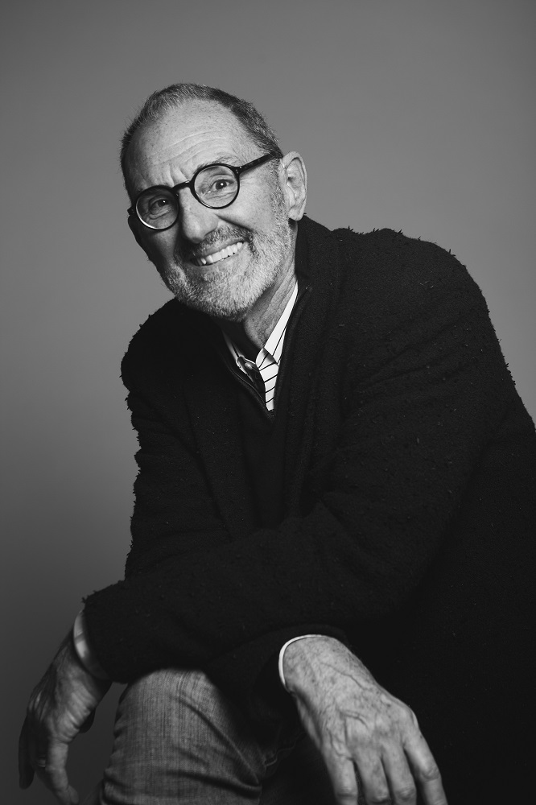

Thom Mayne founded Morphosis as a collective architectural practice engaged in cross-disciplinary research and design. As Design Director and thought leader of Morphosis, Mayne provides overall vision and project leadership to the firm. With permanent offices in Los Angeles and New York City, the firm currently employs over 50 architects and designers.
Mayne's distinguished honors include the Pritzker Prize (2005) and the AIA Gold Medal (2013). He was appointed to the President's Committee on the Arts and Humanities in 2009, and was honored with the American Institute of Architects Los Angeles Gold Medal in 2000. With Morphosis, Thom Mayne has been the recipient of 25 Progressive Architecture Awards, over 100 American Institute of Architecture Awards and numerous other design recognitions. Under Mayne's direction, the firm has been the subject of various group and solo exhibitions throughout the world, including a large solo exhibition at the Centre Pompidou in Paris in 2006, the Contemporary Art Center in Cincinnati, the Walker Arts Institute in Minneapolis, and a major retrospective at the Netherlands Architectural Institute in 1999. Morphosis buildings and projects have been published extensively; the firm has been the subject of 23 monographs, including five by Rizzoli, two by Korean Architect, two by El Croquis (Spain), one by G.A. Japan, one by Phaidon, and one by Equal Books (Korea).
Throughout his career, Mayne has remained active in the academic world. In 1972, he helped to found the Southern California Institute of Architecture. Since then, he has held teaching positions at Columbia, Yale (the Eliel Saarinen Chair in 1991), the Harvard Graduate School of Design (Eliot Noyes Chair in 1998), the Berlage Institute in the Netherlands, the Bartlett School of Architecture in London, and many other institutions around the world. There has always been a symbiotic relationship between Mayne's teaching and practice, evidenced in his concurrent position as Executive Director of the Now Institute at UCLA, a research and design initiative focusing on applying strategic urban thinking to real world issues. He is a tenured Professor at UCLA Architecture and Urban Design since 1993.
M.Arch. II
Harvard-Graduate School of Design
B.Arch.
USC